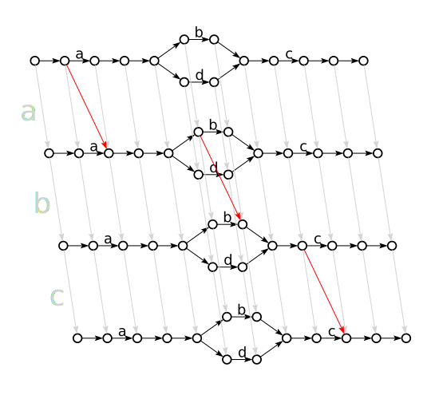

posted by Darryl on 19 May 2016
The concept of edit distance is a useful one, allowing the user of algorithms implementing some notion of it to calculate some measure of distance between two strings. The idea can been generalized to trees, where instead of comparing two strings, you compare two n-ary branching trees. In this post, I'll show another generalization, which permits the comparison of a string with a regular expression to calculate how well the string matches the regular expression.
This post doesn't contain any actual code, just sketches of an algorithm, because how it gets implemented ends up being somewhat boring. I do, however, have a github repo here with a Haskell implementation.
String Edit Distance
Before diving into regex edit distances, it's useful to review the technique for calculating normal string edit distances. The view presented here differs from the usual presentation, but I consider it more essential, and it serves as the main point of generalization.
The standard string edit distance algorithm involves considering a pair of strings, (x,y), and performing successive deletions of initial characters, until both strings are empty. That is to say, for any string pair (x,y) we can perform three operations:
- Delete the first character of x
- Delete the first character of y
- Delete the first character of both (provided that they are the same character)
This collection of operations, together with an initial string pair, generates a directed graph, where the nodes consist of string pairs and the edges consist of the use of such operations (with an edge from p1 to p2 just in case p2 can be derived from p1 by using one of those operations).
Consider, for example, the initial pair (abc,ab) (no quote marks will be used for strings, as it's relatively obvious from the context what's what). This generates the graph
Given such a graph, the edit distance can be determined as follows:
- Assign a cost of 0 to edges that are delete-both operations, and assign a cost of 1 to edges that are either delete-left or delete-right operations
- Let the cost of a path be the sum of the cost of its edges
- Calculate the cost of the paths that start at the initial pair (in this case, (abc,ab)) and end at the empty pair (ε,ε)
- The edit distance is the minimum cost among those path costs
For the example, graph, this gives an edit distance of 1, corresponding to the solitary deletion of the c in the left string in the pair. The path is highlighted here:
Edit Distance Graphs are State Spaces
Looking at these graphs, you might be inclined to say that they look an awful lot like some kind of state space for a state machine, such as non-deterministic finite automaton. Indeed, that's precisely what they are. You might be further inclined, however, to suggest that they're some kind of enriched product of state spaces. That is to say, they look like you've taken two state spaces for distinct machines, and formed their cartesian product. The one state space being the suffixes of the initial x string, and the other being the suffixes of the initial y string (in this case, abc,bc,b,ε and ab,b,ε, respectively). The transitions are the product transitions, plus some new diagonal transitions that correspond to certain simultaneous transitions.
This motivates us to formulate the following perspective: imagine that strings are state machines. A string of length N is a state machine with N+1 states, with N transitions such that the states form a sequence. Each transition is labeled by a successful character of the string, so the 0th transition is the 0th character, and so on. The string abc thus "is", or corresponds to, the state machine
We can define a coupled state machine P⊗Q to be the product of two state machines P and Q, as usually defined, plus additional transitions. The product of two state machines P and Q is usually defined as follows:
- The states of P×Q are pairs (p,q) where p is a state of P, and q is a state of Q
- There is a transition in P×Q from (p,q) to (p',q') labeled by symbol x just in case either
- there is a transition in P from p to p' labeled by symbol x, and q = q', or
- p = p', and there is a transition in Q from q to q' labeled by symbol x
In defining the coupled state machine A⊗B, we augment the transitions by adding also:
- there is a transition in P from p to p' labeled by symbol x, and there is also a transition in Q from q to q' labeled by symbol x
This additional clause adds the simultaneous transitions on both machines, and corresponds to the cases where the two strings happen to coincide on their next characters.
We can see how this plays out for the two strings above. First here are the two state machines for the strings:
Now here is the product machine abc × ab:
And finally, here is the coupled machine abc ⊗ ab:
Searching for String Edit Distance in State Space
We can now define algorithms for searching for edit distances in these state spaces. The naive algorithm is as we discussed earlier in terms of the graphs: the lowest cost for a path/sequence of transitions from the start to finish. But this is inefficient, as it has to consider all such possible paths no matter what. This algorithm is best-case mn, as in the standard Wagner-Fischer algorithm. The worst case must be mn no matter what, but can we do better for the best case?
Knowing that this is a state space problem, we ought to try first to use some standard search techniques. In particular, we're going to try to use lower bounds on cost to determine how we search the space. This will let us perform a best-first search that ought to allow us to discover the minimal-cost paths without having to find all of the paths (in cases where there are different path costs).
So, we must define the lower bound on cost. Given two states in the coupled state space (seen as pairs of strings), we know two things: firstly, cost it took to reach this state along the lowest cost path from the start state.
Secondly, we also know the lower bound on the cost of the remaining steps, which must be the absolute difference of the lengths of the two strings. Why is this so? Suppose the strings are identical and have length N: then we need exactly N simultaneous transitions till we're done. If, on the other hand, they're not identical and have lengths M and N, then the best possible case is that one string has all of the characters of the other, in the same order, but also has some more characters thrown in. Then we need simultaneous transitions for the characters they share, plus the additional transitions for just the longer of the two strings. Since simultaneous transitions are free, only the additional transitions cost, and they cost precisely the absolute difference of the length.
Incidentally, the upper bound on remaining cost is the sum of the two lengths, because they might have no characters in common, so we need non-simultaneous transitions for all the characters of one string, and also for all the characters in the other.
The overall lower bound on cost for a given state can now be defined: it's simply the sum of the lowest cost path to that state, and the lower bound on the cost for the remaining steps.
Given this definition, we can search the state space as follows: we maintain two collections of states, a set of states that we have inspected already and a set of states that are uninspected. We start having inspected no states, and with only the initial state uninspected. We will then proceed to inspect the states. For each uninspected state, we compute all the possible next states via transitions, calling these the next states. For each next state, we compute its lowest cost from the start state (which can be determined from the transitions that lead to it), and its lower bound on the cost for remaining steps, and therefore we can compute the lower bound on cost for the state. At each step of inspection, we look at only those states which have the minimum lower bound on their cost. In this way, we narrow the search, at least initially, to only those paths which seem to be closer to the end state. We've found the edit distance when the set of inspected states contains the end state.
Below is a visualization of this process for the starting states (abc,a), (abc,ab), and (abc,abc). Each step is represented by a successive group (shown in lighter colors) consisting of the minimum cost states that are added to the set of uninspected states at that step. Superscripted on the left of each pair is the lowest cost path to that state, and on the right is the lower bound on its overall cost. We use the graph representation instead of the state machine representation because it's easier to understand, I think.
As you can see, when the strings are more similar, less search has to be performed. How much benefit this has in practice (as in a typical case analysis) is unclear, but it shouldn't be too hard to construct a representative estimate.
Regex Edit Distances
Having demonstrated the technique of using state machines for string edit distances, we can now consider regex edit distances. Observe that regular expresses correspond to state machines as well. We ought to expect, then, that we can construct a coupled machine for a string-regex pair, as we did for string-string pairs. In fact, strings are special cases of regular expressions, so the previous section is just a special case of this one.
To illustrate this, consider the regular expression a(b|d)c, which will match the string abc. If we take the product of their state spaces (using the regular expression state space described in my previous blog post), then we get the following:
If we now add in the simultaneous transitions, to form the coupled state machine, we get

Letting the cost of an empty transition be 0, we can see that the lowest cost paths through the machine are the following highlighted ones:
You'll observe that the lowest cost path is 0, so the edit distance is 0. This is precisely because each time the string transitions across a character, there is a corresponding transition in the regular expression across the same character, and also vice versa.
Here is the space, and lowest cost paths, for the string ac and the regular expression a(b|d)c, which corresponds to a string that doesn't match the regular expression. We can see that it has an edit distance, in this system, of 1.
The edit distance here is 1 because there are some cases where the regular expression transitions across a character but the string does not. In particular, the b and d transitions are not matched by the string.
It should be noted that the above diagrams are something of a deception. Because there are potentially infinitely many paths through a regular expression's state machine, it's not generally possible to diagram the product space like this. A given state can in the NFA can be reached multiple times, and each time is different because contributes to the edit distance. The above diagrams are acceptable only because there are no repetitions in the regular expression a(b|d)c, and so each node can only be reached once. These diagrams are just for building intuitions, nothing more. If we wanted actual representative diagrams, we'd have to use a tree unfolding/universal covering graph of the state space.
Searching for Regex Edit Distance in State Space
However, unlike with strings, there aren't necessarily finitely many paths through a regular expression's state space, because repetitions create loops. The regular expression a+ has finitely many states and transitions, but because some of those transitions start and end at the same state, there are infinitely many paths through the machine, one for each number of repetitions. The naive algorithm of enumerating all the paths and calculating edit distances (as in the Wagner-Fischer algorithm) simply won't work. This is why we invented the search-based algorithm above.
To generalize, then, we simply want to calculate everything using the regular expression's state machine in place of one of the strings. However, in order to do this, we must be able to determine a lower bound on the remaining cost, as we did with strings. Of course, for strings this was easy, because the remainder of the string was precisely the number of transitions needed, but for regular expressions, this isn't the case. So how can we do this?
One option is to inspect the regular expression's finite state machine, and see what all of the paths are that lead from its current state to the end state, and determine from this the lowest number of (non-empty) symbols that it has to transition over. Using the derivative-based representation of regular expression states from my previous post, this turns out to be a simple problem. In fact, it's very similar to the function finishesTrivially.
Wrap Up
The use of finite state machines, which correspond to regular expressions, isn't essential. Any state machine suffices, including push down automata (for context free grammars), and even Turing Machines. This conceptual framework is applicable as long as it's a state machine of some sort, where transitions can be labeled by edges that are read from the input (on a recognizer view of automata). This means that we can, in principle, use this to quantify the amount of error in a malformed string. The edit distance between an input string and a state machine corresponding to a grammar constitutes an amount of syntactic error in the input.
Because edit distance is closely related to diffs, which can also be computed from the state spaces, we can use the principles outlined above to not only quantify how malformed an input string is, but also to determine precisely where the malformedness is in those minimal cases. This makes it possible to not only explain why an input string won't parse, but also to suggest corrections to parse errors. The suggestions can also be automatically selected, providing a kind of automatic error correcting parser, which is especially useful for natural language.
If you have comments or questions, get it touch. I'm @psygnisfive on Twitter, augur on freenode (in #languagengine and #haskell).